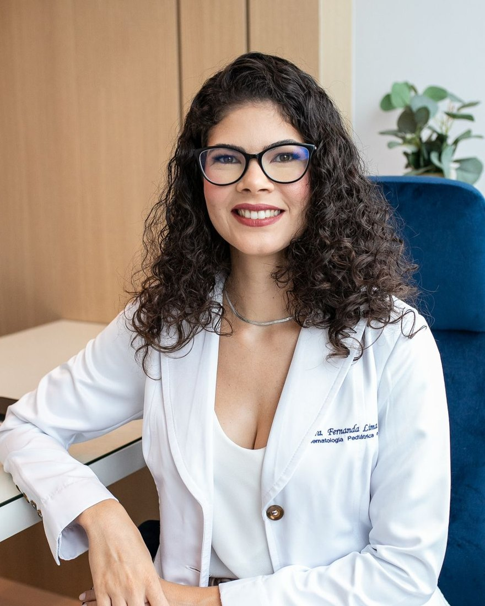
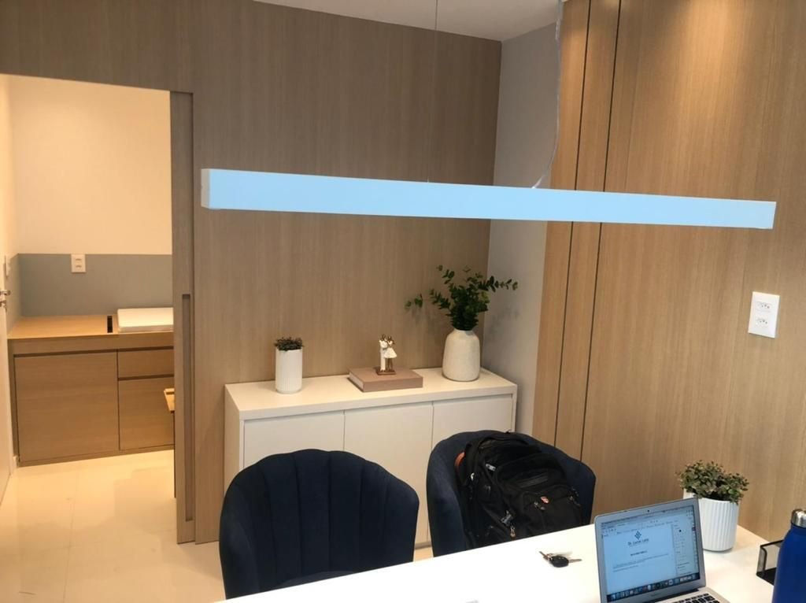
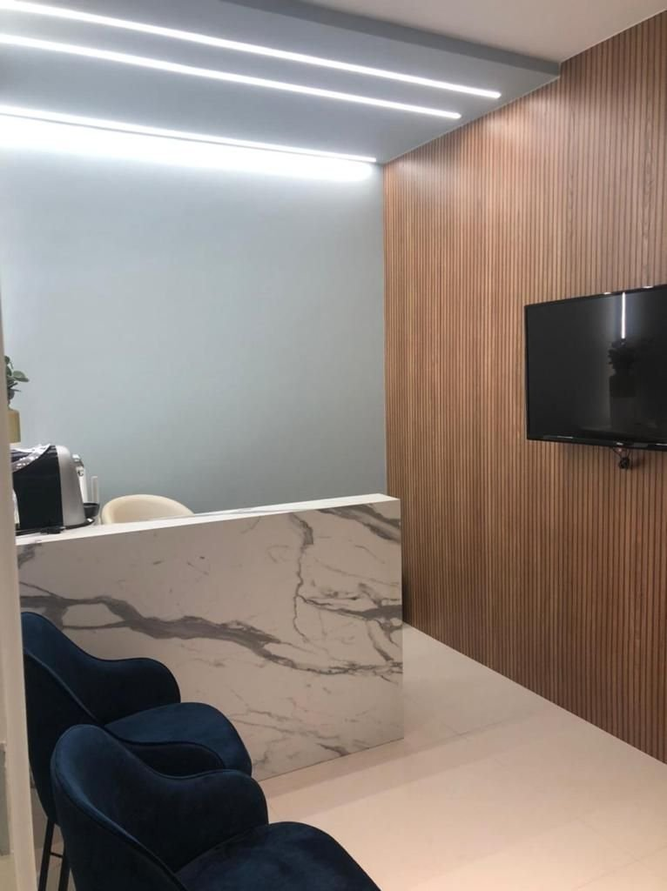
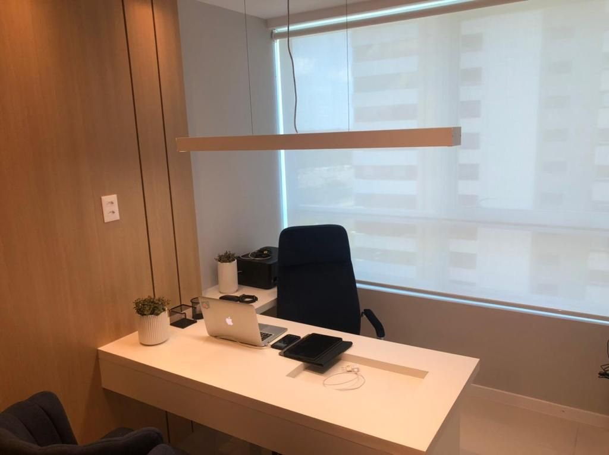

Pediatra · Hematologia e Hemoterapia Pediátrica
Dra. Fernanda Lima Lelis
Hematologia pediátrica: o sangue do seu filho, explicado com calma.
Sou pediatra, com área de atuação em Hematologia e Hemoterapia Pediátrica e formação em transplante de medula óssea em crianças e adolescentes. Atendo bebês, crianças e adolescentes com exame de sangue alterado, anemias, doença falciforme, plaquetas e coagulação — e acolho a família inteira no caminho.
★★★★★5,0 no Google · 85 avaliações · 164 opiniões na DoctoraliaPor onde começar
O que trouxe vocês até aqui?
Escolha o assunto e leia com calma. Cada página explica, em linguagem simples, o que costumo avaliar e por quê. A indicação é individual, definida em consulta.
O hemograma veio alterado
O que significa, o que levar e como é a investigação.
Quando procurarAnemiaMeu filho está pálido
Falta de ferro e outras anemias da infância.
Anemias na infânciaManchas roxasAparecem roxos sem motivo
Plaquetas, sangramentos e coagulação.
Plaquetas e coagulaçãoTeste do pezinhoDeu traço ou doença falciforme
O que muda entre um e outro.
Doença falciformeTambém: Deficiência de G6PDTransplante de medulaSobre a Dra. FernandaOnde atendo
Exame de sangue alterado?
Respire. Vamos por partes.
Um número fora da faixa nem sempre é doença: os valores do sangue mudam com a idade, com infecções recentes e até com o momento da coleta. O caminho é entender o contexto — e isso começa antes da consulta.
- Reúna os exames
O exame que veio alterado e, principalmente, os anteriores — hemogramas antigos, teste do pezinho, cartão de vacinas e relatórios. Comparar ao longo do tempo diz muito.
- A consulta
Ouço a história da criança e da família, examino com calma e explico, em linguagem simples, o que o exame mostra e o que ele ainda não responde.
- A investigação
Quando é preciso, peço exames complementares escolhidos para a dúvida daquela criança — às vezes basta repetir o hemograma no tempo certo.
- O plano
Combinamos juntos o que fazer: tratar, acompanhar ou apenas observar. Tudo explicado para a família sair entendendo o porquê.
“Estou à disposição para esclarecer dúvidas e explicar, de forma simples, o que ocorre no caminho da saúde e da doença.”“Experiência” da Dra. Fernanda na Doctoralia
O hemograma em três partes
Vermelho, branco e plaquetas.
O hemograma é o exame que mais traz as famílias ao consultório. Ele olha três grupos de células — e cada alteração pede uma pergunta diferente.
Glóbulos vermelhos
Levam oxigênio ao corpo. Quando estão baixos, falamos em anemia — a alteração mais comum na infância.
Saiba maisLeucócitosGlóbulos brancos
Defendem contra infecções. Os valores esperados mudam com a idade: nas crianças costumam ser mais altos que nos adultos.
Saiba maise a coagulaçãoPlaquetas
Ajudam a estancar sangramentos. Plaquetas baixas podem aparecer como manchas roxas ou pontinhos vermelhos na pele.
Saiba maisTambém acompanho: doença falciforme e talassemias · deficiência de G6PD · anemias hemolíticas congênitas · anemia aplástica · púrpura e distúrbios das plaquetas · doença de von Willebrand e hemofilia · trombose e trombofilia · alterações nos leucócitos.
Doenças listadas pela Dra. Fernanda no perfil da Doctoralia e no site antigo.
Trajetória
Da pediatria ao transplante de medula.
Medicina na Faculdade de Tecnologia e Ciências (2006–2012), em Salvador; depois, três etapas de formação — pediatria, hematologia pediátrica e transplante de medula óssea em crianças e adolescentes. As datas vêm da Doctoralia, do CNES e da ABHH.
- 2013–2015Pediatria
Residência no Hospital São Rafael, em Salvador. Título de especialista em Pediatria pela Sociedade Brasileira de Pediatria.
Doctoralia · site antigo - 2016–2018Hematologia pediátrica
Residência no Hospital Santo Antônio, em Salvador. Certificado de área de atuação em Hematologia e Hemoterapia Pediátrica pela ABHH em 30/10/2018.
CNES · lista oficial da ABHH - 2019–2021Transplante de medula
Formação em transplante de medula óssea em crianças e adolescentes no Complexo Hospital de Clínicas da UFPR, em Curitiba.
CNES · Doctoralia - 2021Consenso da SBTMO
Coautora do artigo de consenso sobre transplante em doenças pediátricas, na revista da Sociedade Brasileira de Terapia Celular e Transplante de Medula Óssea.
JBMTCT - HojeConsultório e teleconsulta
Hematologia pediátrica no Alpha Medical Center, em Alphaville I, e consulta por vídeo.
Doctoralia

Nas palavras dela
“Trabalhar com as crianças é sempre desafiador e ao mesmo tempo energizante. Tenho em mente que a criança tem uma família que precisa entender exatamente o que acontece no processo saúde-doença do seu filho […]”
“Experiência” da Dra. Fernanda na Doctoralia.
No site antigo, ela resume o que acredita: o tratamento das doenças do sangue passa por “um acompanhamento com afeto, acolhimento e verdade, associado a evidências científicas”. Site antigo
Conheça a Dra. FernandaRespondidas por ela
Dúvidas que os pais trazem.
Perguntas e respostas publicadas pela própria Dra. Fernanda no site antigo e na Doctoralia — sem dados das crianças.
“Não! A deficiência de G6PD é classificado como uma enzimopatia, ou seja, uma alteração genética que interfere na produção da enzima G6PD.”
Principais Dúvidas · site antigo · ver a fonte“Depende! O traço falciforme não causa manifestação clínica, mas é importante entender a parte genética para saber as chances de ter filhos com a doença.”
Principais Dúvidas · site antigo · ver a fonte“O ideal é fazer com 1 ano de idade para que seja possível ter um exame de sangue, no caso o hemograma, para avaliar presença de anemia, alteração nos leucócitos ou plaquetas.”
Principais Dúvidas · site antigo · ver a fonte“[…] normalmente os leucócitos das crianças são mais altos do que os dos adultos. No entanto cada caso precisa ser avaliado de forma individual.”
Resposta pública da Dra. Fernanda na Doctoralia · ver a fonteAvaliações
Explicações detalhadas e muita gentileza.
164 opiniões na Doctoralia · nota 5,0 em 85 avaliações no Google
Excelente profissional! Atenciosa e preocupada em resolver o problema do paciente.
Muito atenciosa. Explicou cada exame detalhadamente. Ela é muito gentil.
a Dra é muito atenciosa e gentil, explica com clareza e me deixou tranquila
atendimento excelente vim de outra cidade e valeu a pena cada km percorrido
Excelente atendimento, empática, atenciosa. Esclarece dúvidas e se mantém disponível.
Excelente consulta, explicou muito bem, deu uma boa assistência, educada e pontual
Dra Fernanda é bastante atenciosa e possui conhecimento técnico eficaz
Trechos de avaliações públicas na Doctoralia, com nome abreviado e data aproximada.
Conteúdos
Para ler antes da consulta.
O artigo científico de que ela é coautora, as respostas públicas aos pais e os perfis onde ela publica a formação.
Consenso da SBTMO sobre transplante de células-tronco em doenças pediátricas, com a Dra. Fernanda entre os autores.
Ler o artigo ↗DoctoraliaRespostas a paisAs respostas públicas dela sobre leucócitos no hemograma e traço falciforme.
Ver as respostas ↗Doctoralia164 opiniões de famíliasPerfil com formação, doenças tratadas e as opiniões de quem já passou pela consulta.
Abrir o perfil ↗YouTubeCanal da Dra. FernandaO canal de vídeos indicado no perfil dela na Doctoralia.
Abrir o canal ↗O consultório
Alpha Medical Center, em Alphaville I.
Madeira clara, poltronas de veludo azul e plantas: um consultório pensado para a criança e a família ficarem à vontade. Para quem mora longe, a consulta também pode ser por vídeo.
Dra. Fernanda Lima LelisAlpha Medical Center · Av. Luís Viana Filho, 7416 · Alphaville I · Salvador – BA
- PresencialConsultório no Alpha Medical Center.
- TeleconsultaConsulta por vídeo, com hora marcada.
- ParticularSegundo a Doctoralia.
- HorárioCom hora marcada — confirme pelo WhatsApp.


Sangramento que não para, manchas roxas sem motivo com a criança abatida, palidez intensa de repente ou febre alta em bebê? Procure o pronto-socorro mais próximo ou o SAMU (192). O consultório atende com hora marcada e não é serviço de urgência.
Dúvidas frequentes
Perguntas comuns
O que faz a hematologista pediátrica?
Cuida das doenças e alterações do sangue do recém-nascido, da criança e do adolescente: anemias, alterações das plaquetas e dos leucócitos, problemas de coagulação, doença falciforme, deficiência de G6PD e outras. Veja quando procurar.
Preciso de encaminhamento do pediatra?
Para a consulta particular, não. Mas, se o pediatra escreveu um pedido ou um relatório, traga: ele ajuda a entender o motivo da consulta.
O que levar na primeira consulta?
O exame alterado, os exames anteriores (hemogramas antigos, teste do pezinho), o cartão de vacinas, a lista de remédios em uso e as suas dúvidas anotadas.
Existe teleconsulta?
Sim. A consulta pode ser por vídeo, além da presencial no Alpha Medical Center. Pergunte pelo WhatsApp qual formato combina com o caso do seu filho.
Atende plano de saúde?
A consulta é particular, segundo o perfil na Doctoralia. Confirme os detalhes pelo WhatsApp ao agendar.
Qual o horário de atendimento?
Atendimento com hora marcada — confirme o dia e o horário pelo WhatsApp.
Agende
Vamos entender juntos o exame do seu filho.
Consulta particular com hora marcada no Alpha Medical Center, em Alphaville I, ou por vídeo. Fale pelo WhatsApp (71) 99998-1716 e confirme o dia e o horário.